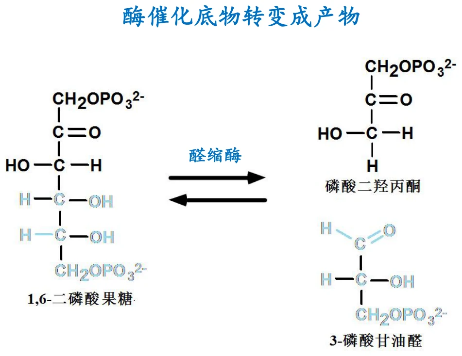
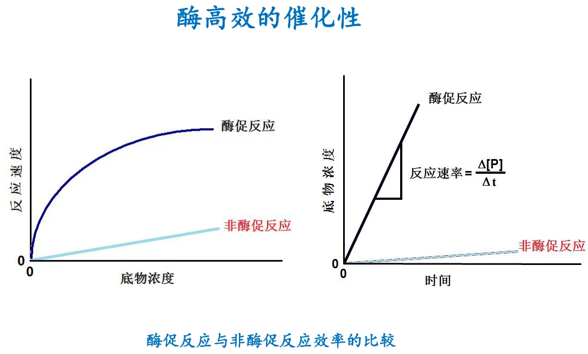
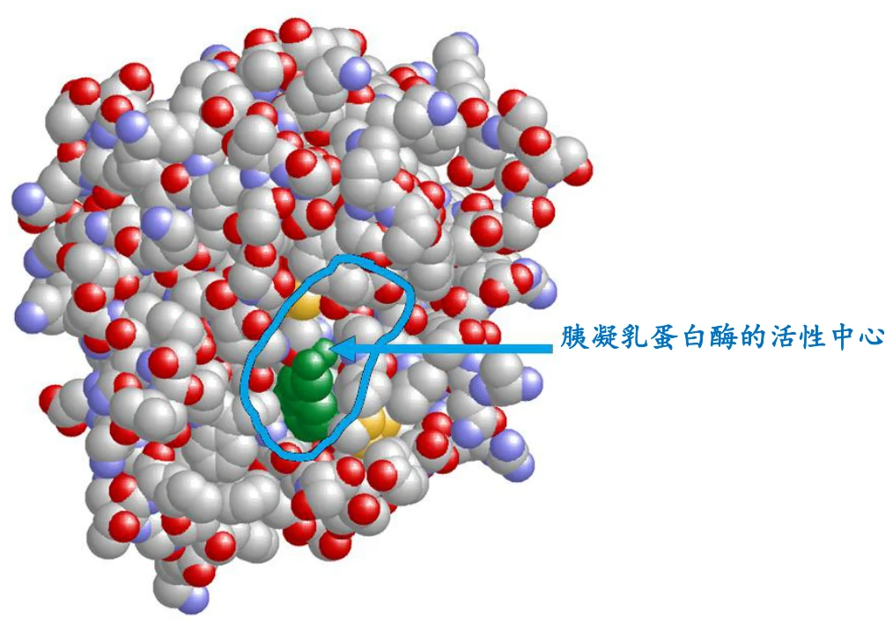
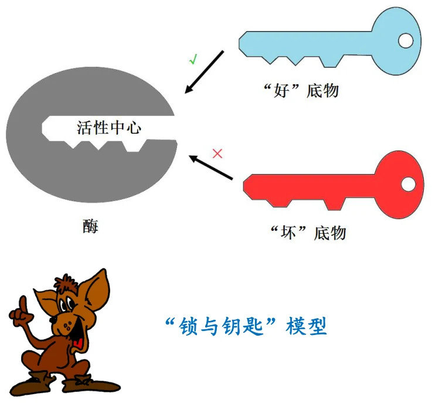
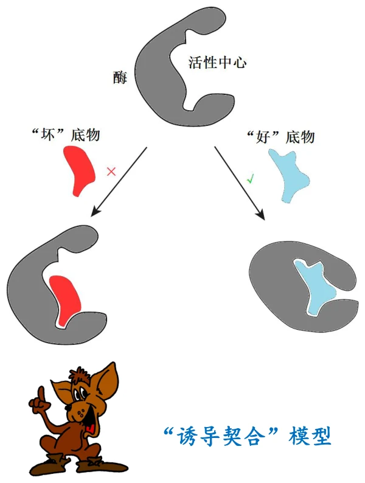
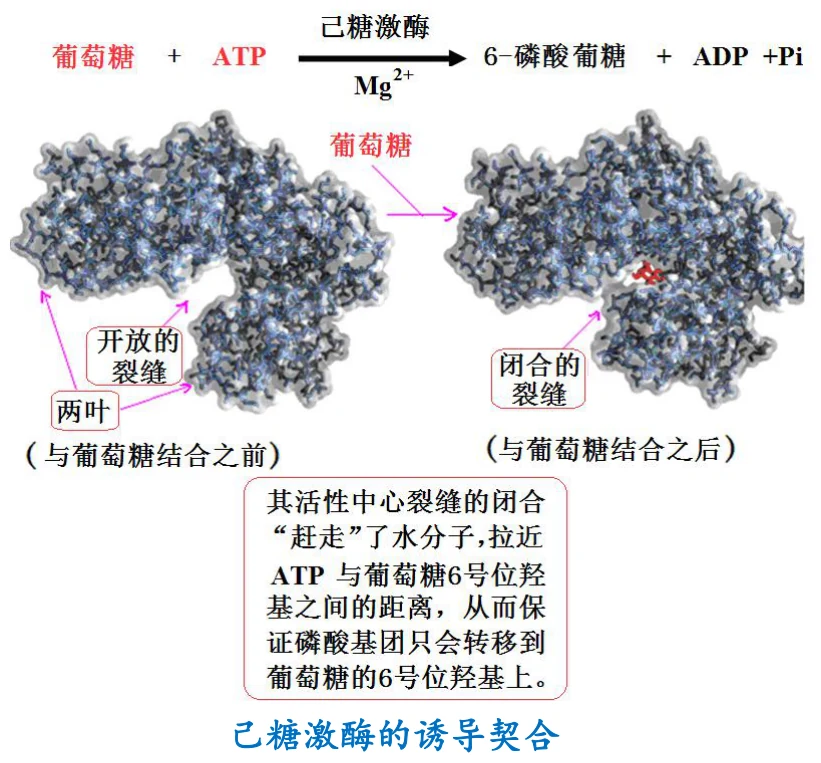
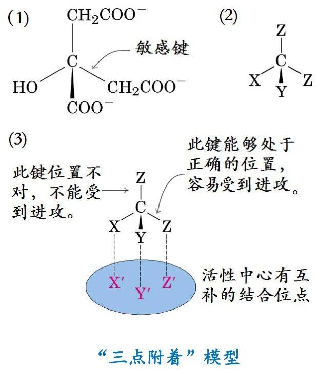
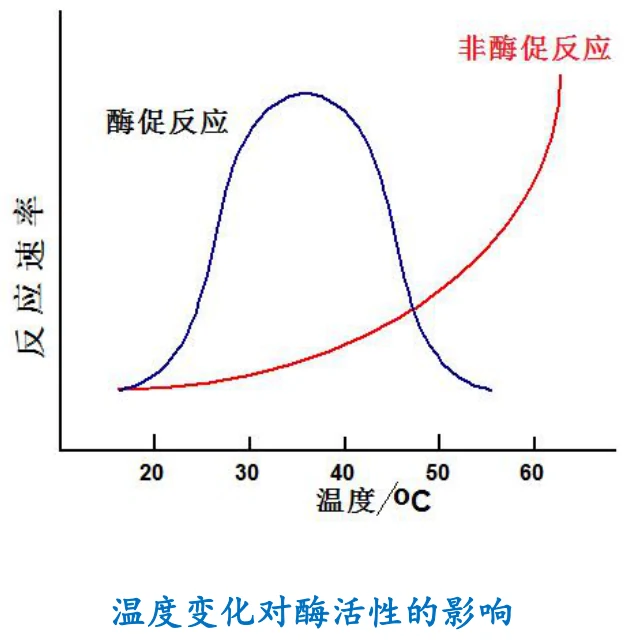
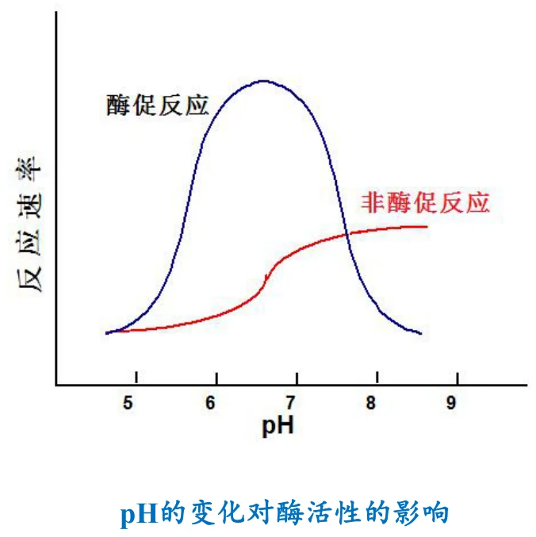
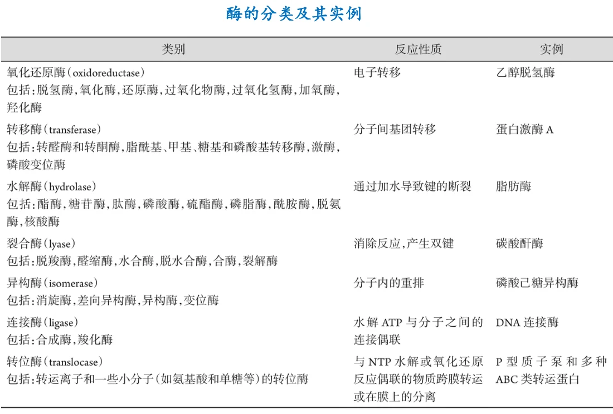

催化剂不能改变反应的ΔG，因此不能把热力学上不可能的反应“变可能”。酶也一样：它只加快本来就能自发进行的反应（ΔG < 0 方向）。酶不是能量的来源。
CHAPTER 09 · INTRODUCTION TO ENZYMES
酶学概论
酶是生物体里最会“催”的一类分子。这一章回答四个问题：酶是什么化学本质、它和非酶催化剂有什么共同点、又独有什么性质、以及它凭什么做到高效和专一。最后按国际分类系统把酶归入六大（现行七大）类别。
酶的定义与本质核酶五种特有性质四类专一性活性中心三种模型单纯酶/缀合酶EC 分类
1. 酶的定义与化学本质
课件的定义很简洁：酶就是由细胞合成的、在机体内行使催化功能的生物催化剂。这个定义里有三个要素需要分别落实：由细胞合成（区别于人工催化剂）、在机体内行使功能（区别于体外的化学催化）、是催化剂（因此遵守催化的一般规律，见第 3 节）。
化学本质上，酶主要是蛋白质，极少数是 RNA。后者称为核酶（ribozyme）。这个例外在 1982 年前后被发现时颠覆了“酶一定是蛋白质”的教条，也为“RNA 世界”假说提供了关键证据。

图源：第9章《酶学概论》PPT，第 5 页。核酶按分子大小与催化机制分为小核酶与大核酶两类。
| 类别 | 大小 | 成员 |
|---|---|---|
| 小核酶 | 约 40–154 nt | 一般来源于某些动、植物病毒的卫星 RNA，主要包括：锤头状（hammerhead）核酶、发夹状（hairpin）核酶、D 型肝炎病毒（HDV）RNA、Varkud 卫星（VS）核酶和 GlmS 核开关 |
| 大核酶 | 几百到几千 nt | 第一类和第二类自我剪接的内含子（self-splicing introns）、催化真核细胞核 mRNA 前体剪接的剪接体（spliceosome）、催化 tRNA 前体 5′ 端后加工的核糖核酸酶 P、以及催化蛋白质生物合成的核糖体 |
这个分类背后的逻辑
小核酶大多是自我切割——自己催化自己的一段反应，结构简单、不依赖蛋白质。大核酶则往往是大型核糖核蛋白复合物的催化核心：剪接体、RNase P、核糖体都是 RNA 加蛋白质的组装体，而真正负责催化的是其中的 RNA 部分。核糖体是其中最惊人的例子——它催化的是肽键形成，也就是蛋白质合成的核心反应。这说明 RNA 不只是信息的载体，也可以承担催化功能。
2. 酶与非酶催化剂的共同性质
酶既然是催化剂，就必然具备催化剂的一般特征。课件列出四条，这四条是理解后面“特有性质”的对照基准。
酶在催化过程中可以被暂时修饰（形成共价中间体），但一轮催化结束后必须恢复原状，因此可以重复使用。这就是极少量酶能催化大量底物的原因，也是“转换数”这个概念的物理基础。
酶降低的是反应的活化能，而正逆反应经过同一个过渡态，所以同一个酶对两个方向的加速倍数是相同的。注意这里说的是加速倍数相同，不是反应速率相同——净方向仍由ΔG 决定。
平衡常数只由ΔG° 决定，与催化剂无关。酶只加快到达平衡的速度、缩短到达平衡的时间，不移动平衡位置。这一点在代谢调控的讨论中极其重要：想改变代谢流向，必须改变酶量或酶活，或者改变底物/产物的浓度，而不能指望酶本身把平衡“推过去”。
把四条串起来
这四条其实都是“催化剂不改变热力学，只改变动力学”这一句话的推论。第一、四条讲热力学不变，第二条讲催化剂自身的循环，第三条讲动力学加速的方向性。记住这一句，四条不用死背。
3. 酶特有的催化性质
课件列出六条。这六条才是“为什么细胞用酶而不是用无机催化剂”的答案。
| 性质 | 含义 | 关键细节 |
|---|---|---|
| 高效性 | 催化效率远高于一般催化剂 | 加速倍数可达 10⁶–10¹⁷ 量级。来源不是“酶更有能量”，而是活性中心把底物结合并定向排列，同时通过过渡态互补降低活化能 |
| 在活性中心与底物结合 | 催化发生在酶表面一个特定区域 | 这是理解专一性、调控、抑制剂作用机制的共同基础（见第 5 节） |
| 专一性 | 对底物有严格选择性 | 分为四类：绝对、基团、键、立体专一性（见第 4 节） |
| 反应条件温和 | 常温、常压、近中性 pH、水相 | 工业化学常需要高温高压；酶在生理条件下即可工作，这本身就是巨大优势 |
| 对反应条件敏感，容易失活 | 温度、pH、离子强度都会影响活性 | 温和条件的另一面：酶是蛋白质，维持其构象的力就是那些弱相互作用，所以容易变性（见第 6 节） |
| 受到调控 | 活性可被开启、关闭、增减 | 包括别构调节、共价修饰、酶量调节等。这是代谢能够有序进行的前提 |
| 许多酶需要辅助因子 | 辅助因子多为维生素或其衍生物 | 见第 7 节“单纯酶 vs 缀合酶” |

图源：第9章 PPT 第 10 页。酶促反应与非酶促反应的效率对比——同样的反应，有酶时速率高出若干个数量级。
“温和”与“易失活”是同一件事的两面
这两条常被当成两个独立的性质来背，其实它们是同一个事实的两面：酶的活性依赖其精确的三维构象。维持这个构象的只是氢键、疏水作用、离子键等弱相互作用，它们足以在生理条件下稳定折叠，但经不起高温、极端 pH 或有机溶剂。所以酶既能“在温和条件下工作”，也必然“容易失活”——这不是缺点，而是同一物理原理的两个推论。
4. 专一性：四种类型
专一性指酶对参与反应的底物有严格的选择性：一种酶仅能作用于一种底物，或一类分子结构相似的底物，发生某种特定类型的化学反应，产生特定的产物。
| 类型 | 含义 | 课件例子 |
|---|---|---|
| 绝对专一性 | 一种酶仅催化一个特定的反应 | 脲酶只能催化尿素的水解反应 |
| 基团专一性 | 只作用于含有特定官能团的分子 | 磷酸酶只水解特定底物分子上的磷酸基团 |
| 键专一性 | 只作用于含有一种特定化学键的分子，不管底物其余部分 | 二肽酶识别二肽分子中的肽键，而不管构成这个肽键的两个氨基酸残基是哪一种 |
| 立体专一性 | 只作用于特定的立体异构体 | 用“三点附着”模型解释（见第 6 节） |
这四类的限定范围依次放宽：绝对专一性限定到具体反应，基团专一性放宽到官能团，键专一性放宽到化学键。立体专一性则是另一个维度——它不限定“是哪种基团或键”，而是限定“是哪种空间构型”。
为什么立体专一性特别重要
酶的活性中心是手性环境（由 L-氨基酸构成），因此对 D 型和 L 型底物的结合方式不同。这解释了为什么生物体内的代谢只走一条立体化学路线，也解释了为什么药物分子的手性如此关键——同一个分子的两个对映体，在体内可能只有一个能被酶识别。这与第 5 章讨论的蛋白质手性、以及手性药物的药效差异是同一套逻辑。
5. 活性中心及其七个特征
活性中心（也称活性部位）指酶分子上直接与底物结合、并与催化作用直接相关的区域。它由两类基团组成：
负责与底物结合，决定酶的专一性——它决定“谁来反应”。
参与催化，负责底物旧键的断裂和产物新键的形成，决定酶的催化能力——它决定“反应怎么发生”。
课件补充一句：也可能某些基团两者兼而有之。例如胰凝乳蛋白酶中的 His-57 既参与结合定位，又直接参与质子转移的催化循环。

图源：第9章 PPT 第 14 页。胰凝乳蛋白酶的活性中心——催化三联体（Ser-His-Asp）是“少量残基承担核心催化”的经典实例。
5.1 活性中心的主要特征（七条）
| 特征 | 含义 | 推论 |
|---|---|---|
| 三维实体，一级结构上不相邻 | 活性中心通常由在一级结构上并不相邻的氨基酸残基组成 | 只有折叠成三级结构后这些残基才聚到一起。所以变性必然导致失活——这正是第 3 节“容易失活”的结构根因 |
| 只占很小体积 | 约占酶总体积的 1%–2% | 酶的大部分序列负责折叠、稳定与调控，不直接参与催化。这也解释了为什么很多突变不破坏活性 |
| 是表面的裂缝或口袋 | 酶分子表面的一个裂隙、空隙或口袋 | 提供一个与本体溶剂相对隔离的微环境，便于富集底物、排除水分子 |
| 内部多为疏水残基 | 中心内多为疏水氨基酸残基，但也有少量极性残基 | 疏水环境提高底物亲和力并降低介电常数（增强静电催化）；极性残基负责结合与催化 |
| 多重次级键结合 | 与底物通过氢键、疏水键和范德华力结合 | 单个次级键很弱，但众多次级键的加和足以提供强结合与高特异性。这些键同时是“可逆”的，保证产物能释放 |
| 结构互补性 | 结合专一性在一定程度上取决于活性中心与底物之间的结构互补 | 这是“锁与钥匙”模型的核心（见第 6 节） |
| 构象具有柔性 | 活性中心的构象不是固定不变的，而是具有一定柔性 | 这是“诱导契合”模型的前提（见第 6 节）。柔性使酶能适应底物并结合过渡态，也解释了别构调节的可能性 |
最后两条看似矛盾
“结构互补”与“构象柔性”并列出现，容易被误读为自相矛盾。实际上它们描述的是两个不同层面：互补性说明为什么只有特定底物能结合（选择性），柔性说明结合过程本身可以改变构象（适应性）。第 6 节的两种模型正好各取一端。
6. 解释专一性的三种模型
① 锁与钥匙学说（lock and key） 酶的活性中心是刚性的“锁”，底物是形状吻合的“钥匙”。优点是直观解释了绝对专一性；缺点是把活性中心当成刚体，无法解释酶的构象柔性、也无法解释过渡态稳定化。
② 诱导契合学说（induced fit） 底物接近时，酶的活性中心被诱导发生构象改变，从而与底物契合。关键是“契合发生在结合之后”。这解释了柔性、解释了为什么某些酶在无底物时活性很低，也解释了过渡态互补——酶真正契合的是过渡态，而底物只是“半契合”。
③ 三点附着模型（three-point attachment） 专门解释立体专一性。底物至少有三个位点同时与活性中心作用，因此在手性环境中只有一种对映体能三个点都“贴住”，另一种对映体必然有一个点对不上。

图源：第9章 PPT 第 16 页。“锁与钥匙”模型。

图源：第9章 PPT 第 17 页。“诱导契合”模型——底物结合诱导活性中心改变构象。

图源：第9章 PPT 第 18 页。己糖激酶的诱导契合：两个结构域像贝壳一样合拢，把底物包裹进活性中心。这是诱导契合最经典的实验证据。

图源：第9章 PPT 第 19 页。“三点附着”模型。
三个模型不是替代关系
把它们当成“新旧理论更替”是常见的误解。更准确的看法是：锁与钥匙抓住了“互补性”这一必要条件，诱导契合修正了“刚性”这一错误假设，三点附着把互补性推广到立体化学维度。三者各自解决了不同的问题，现代描述中常常同时使用。
7. 温度与 pH 对酶活性的影响
这两条既是“酶易失活”的具体表现，也直接决定了实验与工业用酶的条件选择。

图源：第9章 PPT 第 20 页。温度对酶活性的影响呈钟形曲线，顶点为最适温度。
温度曲线的形状来自两种相反效应的叠加：升温加快分子运动，反应速率按 Arrhenius 规律上升；但同时升温也破坏维持构象的弱相互作用，导致酶变性失活。前者是可逆的动力学效应，后者是不可逆的结构破坏。低温下变性可逆（酶只是“被冻住”），高温下变性不可逆（构象已经崩解）。这就是钟形曲线右支很陡、左支较缓的原因，也是“最适温度”不是一个固定常数的原因——测定时间越长，测得的最适温度越低，因为长时间受热累积了更多失活。

图源：第9章 PPT 第 21 页。pH 对酶活性的影响同样呈钟形曲线，顶点为最适 pH。
pH 的影响有两个独立机制：①影响活性中心与底物上可解离基团的质子化状态——催化基团必须以正确的质子化形式存在才能发挥功能（例如 His 必须在特定 pH 下才能作为质子受体/供体）；②极端 pH 破坏酶的三级结构，导致不可逆失活。所以同一条钟形曲线里，中间部分是可逆的（质子化状态改变），两端是不可逆的（变性）。
旁证：细胞内 pH 是被调控的
不同酶各有最适 pH，而细胞内不同区室的 pH 差异很大——溶酶体约 pH 4.5–5.0，细胞质约 pH 7.2。溶酶体水解酶的最适 pH 恰好偏酸，这既保证了它们在溶酶体内高效工作，也使得一旦泄漏到细胞质中就会大幅失活，从而为细胞提供了一层保护机制。
8. 单纯酶与缀合酶：辅因子的三类划分
按化学组成，酶分为两类：属于单纯蛋白质的酶称单纯酶；属于缀合蛋白质的酶称缀合酶（结合酶）。
缀合酶除了蛋白质以外，还结合某些对热稳定的非蛋白质小分子或金属离子，它们统称为辅因子。涉及三个关键术语：
| 术语 | 定义 | 记忆要点 |
|---|---|---|
| 脱辅酶 apoenzyme | 丧失辅因子的酶（即只剩蛋白质部分） | 单独存在时无活性 |
| 全酶 holoenzyme | 与辅因子结合在一起的酶 | = 脱辅酶 + 辅因子，只有全酶有催化活性 |
| 辅因子 cofactor | 包括辅酶、辅基和金属离子三类 | 决定反应类型的往往是辅因子，决定专一性的是脱辅酶 |
辅酶与辅基的区分标准不是化学结构，而是结合强度：
专指与脱辅酶结合松散、用透析的方法就容易去除的有机小分子。因为结合松散，辅酶常能在不同酶之间“搬运”化学基团或电子。
专指与脱辅酶结合紧密、用透析或超滤难以去除的有机小分子。因为结合紧密，辅基往往不离开酶分子，而是随酶一起完成催化循环。
为什么“多为维生素或其衍生物”
课件指出，作为辅助因子的多为维生素或其衍生物。这解释了一个重要的营养学事实：维生素缺乏会同时影响一大批代谢反应，因为同一种维生素衍生的辅酶往往参与许多种酶。例如 NAD⁺ 来自烟酸（维生素 B₃）、FAD 来自核黄素（维生素 B₂）、辅酶 A 来自泛酸（维生素 B₅）。这也正是“维生素需要量极小但绝不可缺少”的原因——它们是催化工具，不是能量或结构材料。
9. 酶的分类与命名
国际酶学委员会（IUBMB）按催化的反应类型把酶分为六大类（现行系统已扩展为七类，增加的第七类为易位酶）。课件给出的完整表格是本章最需要背下来的内容，因为它是后面所有代谢章节的“目录”。

图源：第9章 PPT 第 24 页。七大类酶的反应性质与代表性实例。同一类下还列出了亚类（如氧化还原酶包括脱氢酶、氧化酶、还原酶、过氧化物酶、加氧酶、羟化酶）。
| 类别 | 反应性质 | 课件实例 | 所属亚类举例 |
|---|---|---|---|
| 1. 氧化还原酶 oxidoreductase | 电子转移 | 乙醇脱氢酶 | 脱氢酶、氧化酶、还原酶、过氧化物酶、过氧化氢酶、加氧酶、羟化酶 |
| 2. 转移酶 transferase | 分子间基团转移 | 蛋白激酶 A | 转醛酶和转酮酶，脂酰基、甲基、糖基和磷酸基转移酶，激酶，磷酸变位酶 |
| 3. 水解酶 hydrolase | 通过加水导致键的断裂 | 脂肪酶 | 酯酶、糖苷酶、肽酶、磷酸酶、硫酯酶、磷脂酶、酰胺酶、脱氨酶、核酸酶 |
| 4. 裂合酶 lyase | 消除反应，产生双键 | 碳酸酐酶 | 脱羧酶、醛缩酶、水合酶、脱水合酶、合酶、裂解酶 |
| 5. 异构酶 isomerase | 分子内的重排 | 磷酸己糖异构酶 | 消旋酶、差向异构酶、异构酶、变位酶 |
| 6. 连接酶 ligase | 水解 ATP 与分子之间的连接偶联 | DNA 连接酶 | 合成酶、羧化酶 |
| 7. 易位酶 translocase | 与 NTP 水解或氧化还原反应偶联的物质跨膜转运或在膜上的分离 | P 型质子泵和多种 ABC 类转运蛋白 | 转运离子和一些小分子（如氨基酸和单糖等）的转位酶 |
三个最容易混的命名规则
①合酶 vs 合成酶：合酶（synthase）属于裂合酶类，催化不消耗 ATP 的加成/消除型合成；合成酶（synthetase）属于连接酶类，催化需要 ATP 供能的连接反应。一字之差，能量代价完全不同。
②激酶 vs 磷酸酶 vs 磷酸变位酶：激酶把磷酸基从 ATP 转移到底物上（转移酶）；磷酸酶把磷酸基水解下来（水解酶）；磷酸变位酶把磷酸基在同一分子内部挪位置（异构酶）。
③脱氢酶 vs 氧化酶：两者都是氧化还原酶，但脱氢酶把氢转移给电子载体（如 NAD⁺），氧化酶把电子直接交给氧。
10. 研究酶的医学重要性
课件用一页总结了五个方面的医学意义，逻辑是“酶与疾病互为指示剂和靶点”。
许多疾病是缺乏某一种酶，或一种酶不合适表达引起的。遗传性代谢缺陷大多属于这类。
大量药物的作用机制就是抑制特定酶的活性。第 10 章将详细讨论酶抑制剂动力学——这正是药物设计的理论基础。
有时酶本身就可以作为治疗药物（如某些溶栓酶、消化酶制剂）。
存在一种酶或缺乏一种酶经常被用来诊断某些疾病。这是临床生化检验的核心内容之一。
| 疾病 | 诊断用酶 | 为什么这些酶会升高 |
|---|---|---|
| 病毒性肝炎 | 谷丙转氨酶（ALT） | ALT 主要存在于肝细胞胞质，肝细胞受损时释放入血 |
| 心肌梗塞 | 谷草转氨酶（AST）、肌酸激酶（CK）、LDH（H₄） | 心肌细胞坏死释放胞内酶。多项联合检测可提高诊断的特异性与时相判断能力 |
| 急性胰腺炎 | 淀粉酶、脂肪酶 | 胰腺腺泡细胞受损，消化酶释放入血 |
为什么“测酶”能反映器官损伤
组织特异性的酶在细胞内浓度远高于血浆。正常时细胞膜完整，酶不外漏；一旦细胞受损或坏死，这些酶就按浓度梯度释放入血，血浆酶活升高直接指示相应组织的损伤。这解释了为什么不同疾病用不同酶来诊断——依据的是各酶在组织中的分布差异。这也是第 5 章“蛋白质性质及研究方法”中分离纯化与活性测定技术在临床上的直接应用。
11. 复习清单
- 酶的定义包含哪三个要素？酶的化学本质是什么？例外是什么？
- 核酶按大小分为哪两类？各举三个成员。核糖体为什么算核酶？
- 酶与非酶催化剂的四条共同性质是什么？它们可以归结为哪一句话？
- “对正反应和逆反应的催化作用相同”指的是加速倍数相同还是速率相同？为什么？
- 酶特有的催化性质有哪六条（加上辅助因子为七条）？
- 为什么说“反应条件温和”与“容易失活”是同一原理的两面？
- 专一性分哪四类？各举一个课件例子。它们在限定范围上是什么关系？
- 什么是结合基团与催化基团？各自决定什么？
- 活性中心的七个特征是什么？为什么说“一级结构上不相邻”解释了变性必然失活？
- “结构互补”与“构象柔性”是否矛盾？各对应哪个模型？
- 三种专一性模型的核心主张各是什么？诱导契合修正了锁钥模型的哪个错误假设？
- 温度影响酶活性为什么呈钟形曲线？曲线左右两支的可逆性有何不同？
- 为什么“最适温度”不是固定常数？测定时间变长会怎样变化？
- pH 影响酶活性的两个独立机制是什么？为什么溶酶体酶的酸性最适 pH 是一种保护？
- 脱辅酶 / 全酶 / 辅因子三者的关系是什么？
- 辅酶与辅基的区分标准是什么？各用什么方法去除？
- 辅因子中为什么“多为维生素或其衍生物”？这解释了维生素的什么特点？
- 酶的七大类别分别是什么？各自的反应性质？各举一例。
- 合酶与合成酶、激酶与磷酸酶与磷酸变位酶、脱氢酶与氧化酶三组概念如何区分？
- 病毒性肝炎、心肌梗塞、急性胰腺炎各用什么酶诊断？为什么测酶能反映器官损伤？
12. 课件提示与待核对项
| 位置 | 课件原文情况 | 整理时的处理 |
|---|---|---|
| 第 9 页 / 第 3 节 | 课件列出“酶特有的催化性质”六条 | 正文扩为七条，把“许多酶的活性还需要辅助因子的存在，作为辅助因子的多为维生素或其衍生物”单列，因为它在第 8 节展开。若教材算作六条，可合并 |
| 第 11 页 | 专一性写“一般有四种类型”，前三种给出了例子，第四种“立体专一性”未在该页给出例子 | 正文补写了立体专一性的含义与意义（活性中心为手性环境）。课件原页确实没有例子，请对教材确认是否应补 |
| 第 5 页 | 小核酶成员列出“锤头状、发夹状、HDV RNA、Varkud 卫星核酶和 GlmS 核开关” | 照录。注意 HDV 与 Varkud 卫星在这里与锤头状、发夹状并列，实际分类上它们也可按结构归入锤头状或发夹状类。此处按课件原文保留 |
| 第 22 页 | 辅酶与辅基都限定为“有机小分子” | 照录，并明确第三类是金属离子。注意把“辅因子”与“辅酶”区分开：辅因子是总称，辅酶只是其中一类 |
| 第 24 页 | 分类表列出七类（含易位酶），但课件提纲第 2 页只写“酶的分类和命名” | 正文说明现行系统为七类，前六类为 IUBMB 原始分类。两条信息并不冲突，只是分类系统的版本差异 |
| 第 12 页 | “但也可能有某些基团两者兼而有之”一句未举例 | 正文以胰凝乳蛋白酶 His-57 为例说明。该例子来自通用教材，请对课件或教材确认 |